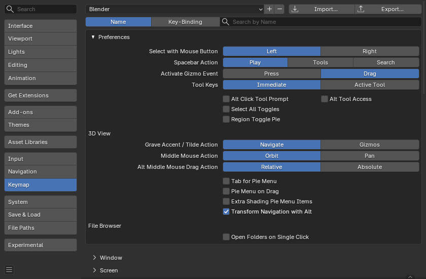
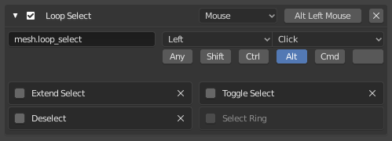

Keymap¶
Trong màn hình này, bạn có thể cấu hình các phím tắt bàn phím và chuột.

Phần Keymap trong Blender Preferences.¶
Xem thêm
Presets¶
Ở phía trên cùng của cửa sổ, bạn có thể chọn và quản lý các preset.
- Keymap Presets
Ô chọn cho phép bạn chọn trong các preset có sẵn:
Blender: keymap mặc định, cũng là keymap được dùng xuyên suốt tài liệu này.
Blender 27x: keymap kiểu cũ như được dùng trong Blender 2.79 và các phiên bản trước đó.
Industry Compatible: keymap gần khớp hơn với các ứng dụng chỉnh sửa 3D khác.
- Add Custom Keymap Configuration
Thêm một cấu hình keymap tùy chỉnh.
- Remove Keymap Configuration
Xóa một cấu hình keymap tùy chỉnh.
- Import
Mở File Browser để chọn một file
.pychứa preset tùy chỉnh.
- Export
Lưu cấu hình keymap hiện tại thành một preset để người khác có thể dùng.
- All Keymaps
Khi tắt, chỉ những phân bổ phím tắt đã bị thay đổi mới được xuất. File xuất này có thể được xem là một "bản delta của keymap" thay vì một bản xuất đầy đủ.
Khi bật, toàn bộ keymap sẽ được ghi ra.
Lọc¶
Bên dưới danh sách preset, bạn có thể lọc danh sách các thao tác để nhanh chóng tìm thấy thao tác mình cần.
- Filter Type
- Name:
Lọc các thao tác theo tên của chúng (chẳng hạn
New File).- Key Binding:
Lọc các thao tác theo phím tắt hiện được gán cho chúng (chẳng hạn
ctrl n).
- Search
Văn bản cần tìm (để trống để hiển thị tất cả các thao tác).
Preferences¶
Các tùy chỉnh này chỉ áp dụng cho keymap Blender.
- Select with Mouse Button
Quyết định nút chuột nào được dùng để chọn các mục.
Trong khi chọn bằng nút chuột trái là mặc định vì nhất quán với phần lớn phần mềm khác, chọn bằng nút chuột phải có lợi thế về quy trình làm việc trong một số tình huống.
- Left:
LMB chọn các mục còn RMB mở menu ngữ cảnh.
- Ưu điểm:
Hành vi quen thuộc với những người dùng đến từ các ứng dụng khác.
Cách truy cập menu ngữ cảnh phù hợp với tiêu chuẩn chung của ngành.
Chuyển đổi dễ dàng hơn từ các phần mềm 3D và thiết kế khác.
- Nhược điểm:
Việc chọn và biến đổi đều dùng nút chuột chính, điều này có thể làm tăng khả năng di chuyển nhầm khi nhấp gần các gizmo.
3D Cursor cần một phím bổ trợ (ví dụ: Shift-RMB) để đặt.
- Right:
RMB chọn các mục còn LMB đặt 3D Cursor.
- Ưu điểm:
Tách biệt hành động chọn khỏi hành động biến đổi, giảm thiểu các chỉnh sửa nhầm trong lúc modeling.
Đặt 3D Cursor nhanh chóng và trực tiếp bằng LMB.
Theo lịch sử, được tối ưu cho các quy trình modeling đòi hỏi độ chính xác.
- Nhược điểm:
Kém quen thuộc hơn với người dùng mới.
Menu ngữ cảnh cần một phím tắt thay thế, tùy vào cấu hình.
- Spacebar Action
Quyết định hành động của phím Spacebar.
- Play:
Bắt đầu/dừng phát lại animation. Tùy chọn này phù hợp cho công việc animation hoặc chỉnh sửa video.
- Tools:
Mở Toolbar ngay bên dưới con trỏ để nhanh chóng thay đổi công cụ đang hoạt động. Tùy chọn này phù hợp nếu bạn làm nhiều việc modeling hoặc rigging.
Bạn có thể chọn công cụ theo nhiều cách:
Nhấn Spacebar, sau đó nhấp vào một công cụ bằng chuột.
Giữ Spacebar, di chuột tới một công cụ, rồi nhả Spacebar.
Nhấn Spacebar, rồi nhấn phím hiển thị trong popover (ví dụ: T cho công cụ Transform).
Nhấn Spacebar cùng lúc với phím của công cụ, ví dụ Spacebar-T để chọn công cụ Transform trong một thao tác.
- Search:
Mở Menu Search. Tùy chọn này phù hợp với người mới làm quen với Blender và chưa quen thuộc các menu và phím tắt. Tuy nhiên, ngay cả khi bạn không chọn tùy chọn này, bạn vẫn có thể truy cập chức năng tìm kiếm bằng F3.
Nếu bạn chọn gì đó khác Play, bạn có thể dùng Shift-Spacebar để bắt đầu/dừng việc phát lại.
- Activate Gizmo Event
Sự kiện kích hoạt cho các gizmo hỗ trợ thao tác kéo. Tùy chọn này chỉ khả dụng khi Select with Mouse Button được đặt thành Left.
- Press:
Thao tác của gizmo được khởi động (và các tùy chọn bổ sung xuất hiện trong Status Bar) ngay khi bạn nhấn phím chuột xuống trên gizmo.
- Drag:
Thao tác chỉ được khởi động khi bạn bắt đầu kéo gizmo.
- Tool Keys
Quyết định hành vi của các phím tắt kích hoạt công cụ.
- Immediate:
Công cụ lập tức được sử dụng. Ví dụ, nếu bạn nhấn Ctrl-B trong khi chỉnh sửa một mesh, thao tác này sẽ lập tức khởi động Bevel: bạn có thể di chuột để thay đổi kích thước rồi nhấp LMB để xác nhận.
- Active Tool:
Công cụ chỉ được chọn (giống hành vi như khi bạn nhấp vào nó trong Toolbar). Ví dụ, nếu bạn nhấn Ctrl-B trong khi chỉnh sửa một mesh, công cụ Bevel sẽ được chọn và gizmo sẽ xuất hiện trong viewport; để thực sự thực hiện một phép bevel, bạn sau đó cần kéo gizmo này.
- Alt Click Tool Prompt
Gõ nhẹ Alt sẽ hiển thị trong status bar một lời nhắc yêu cầu phím bấm thứ hai để kích hoạt công cụ. Lưu ý rằng tùy chọn này không khả dụng khi dùng Emulate 3 Button Mouse.
- Alt Tool Access
Giữ Alt để dùng Active Tool ở những chỗ thông thường phải dùng gizmo. (Ví dụ, với công cụ Move được chọn, bạn có thể giữ Alt và kéo chuột đến bất kỳ đâu trong viewport để di chuyển object được chọn, thay vì phải kéo gizmo của nó.) Tùy chọn này chỉ khả dụng khi Select with Mouse Button được đặt thành Left và Emulate 3 Button Mouse bị tắt.
- Select All Toggles
Khiến phím tắt Select All A bỏ chọn tất cả khi đã có bất kỳ phần chọn nào.
- Region Toggle Pie
N mở một pie menu để bật/tắt Region thay vì luôn bật/tắt vùng Sidebar.
3D Viewport¶
- Grave Accent / Tilde Action
- Navigate:
Pie menu Viewpoint, hữu ích trên các hệ thống không có bàn phím số.
- Gizmos:
Pie menu của các transform gizmo, hữu ích để nhanh chóng chuyển đổi giữa các transform gizmo. Lưu ý rằng điều này không áp dụng cho các công cụ bắt buộc một gizmo nhất định (Move, Rotate, Scale và Transform); nếu bạn đang chọn công cụ như vậy, gizmo sẽ giữ nguyên dù bạn chọn gì trong pie menu.
- Middle Mouse Action
Hành động khi kéo MMB trong viewport. Điều này cũng áp dụng cho trackpad.
- Orbit:
Xoay quỹ đạo góc nhìn quanh một điểm trung tâm. Shift-MMB được dùng để pan (di chuyển ngang).
- Pan:
Pan góc nhìn. Shift-MMB được dùng để xoay quỹ đạo.
- Alt Middle Mouse Drag Action
Cách xác định viewpoint mới khi kéo Alt-MMB trong viewport.
- Relative:
Viewpoint mới phụ thuộc vào cả hướng di chuyển của chuột lẫn viewpoint hiện tại. Ví dụ, kéo chuột theo phương ngang sẽ xoay viewpoint 90° quanh trục dọc hiện tại của góc nhìn.
- Absolute:
Viewpoint mới chỉ phụ thuộc vào hướng di chuyển của chuột. Ví dụ, kéo chuột sang phải luôn đặt viewpoint ở phía dương của trục X toàn cục.
File Browser¶
- Open Folders on Single Click
Đi vào thư mục bằng cách chỉ nhấp một lần thay vì hai lần.
Editor¶
Trình soạn thảo Keymap cho phép bạn thay đổi các phím tắt mặc định cho từng editor của Blender.

Trình soạn thảo Keymap.¶
Cách dùng
Tìm thao tác mà bạn muốn đổi phím tắt. Chức năng lọc có thể giúp ích việc này.
Chọn xem thao tác nên được kích hoạt bằng phím bàn phím, nút chuột hay thứ gì khác.
Nhấp vào nút ở bên phải rồi nhấn phím tắt bạn muốn gán.
- Active
Bỏ đánh dấu hộp kiểm để tắt mục keymap này.
- Map Type
- Keyboard:
Một phím tắt đơn lẻ hoặc tổ hợp phím.
- Mouse:
Các hành động từ nút chuột, bút cảm ứng hoặc bàn di chuột.
- NDOF:
Chuyển động hoặc nút bấm từ một thiết bị chuột 3D (NDOF).
- Tweak:
Nhấp và kéo chuột (tùy chọn gán hướng kéo thành các hành động khác nhau).
- Text Input:
Dùng chức năng này bằng cách nhập một đoạn văn bản.
- Timer:
Dùng nội bộ bởi Blender.
- Operator ID Name
Định danh (identifier) của operator cần gọi.
Gợi ý
Xem
blender_api:bpy.opsđể có danh sách các operator (bỏ tiền tốbpy.để lấy định danh).- Event
- Type
Phím hoặc nút kích hoạt mục keymap này (tùy vào loại map).
- Value
Hành động (như nhấn, nhả, nhấp, kéo, v.v.), (tùy vào loại map).
- Modifier
Các phím bổ trợ cần giữ (như Ctrl, Shift, Alt).
- Operator Properties
Giá trị ban đầu cho các thuộc tính riêng của operator.
Xem thêm
Xem Tùy biến Keymap để biết thêm thông tin về việc chỉnh sửa keymap.
Khôi phục¶
Nếu bạn muốn khôi phục cài đặt mặc định cho một keymap, chỉ cần nhấp vào nút Restore ở góc trên bên phải của keymap đó.
Mẹo
Thay vì thay đổi keymap mặc định, bạn cũng có thể thêm một keymap mới.
Hạn chế đã biết¶
Các phiên bản Blender¶
Một vấn đề của việc chỉnh sửa keymap riêng là các phiên bản Blender mới hơn có thể thay đổi cách truy cập công cụ, làm hỏng keymap tùy chỉnh của bạn.
Mặc dù keymap có thể được cập nhật thủ công, bạn càng tùy chỉnh nhiều thì khả năng xung đột trong các phiên bản Blender mới càng cao.